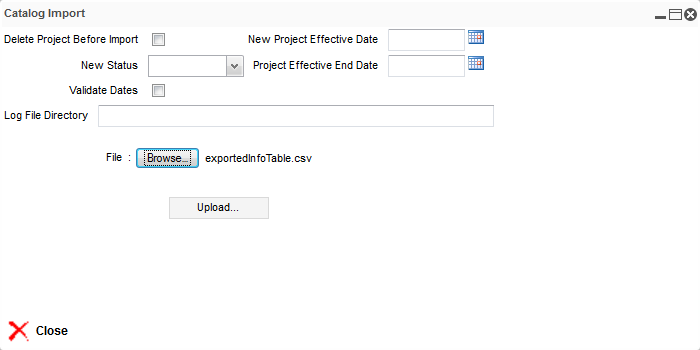

Import an Info Table
To import an info table, follow these steps:
Note: A project must be opened to import an info table.
- On the Info Model Detail dialog, click the Info Tables tab.
- The list of info table details appears. Select one from the list (for example, 8/14/2013 18).
- Click the Import button.
- The Catalog Import dialog appears. Click the Browse button and select an exported info table to import (for example, exportedInfoTable.csv).

From the Catalog Import dialog, you can either select or enter information in these fields:
| Field |
Description |
Optional / Default |
| Delete project before import |
When selected, the project associated with the imported info table is deleted. |
Default |
| New Project Effective Date |
This field indicates the changed date of the project and its objects. Refer to Start and End dates for details. |
Optional |
| New Status |
This field indicates a list of available status to select from the drop-down (for example, Definition and Active). |
Optional |
| Project Effective End Date |
This field denotes the new end date of the project and its objects that represents the date when they are no longer effective. |
Optional |
| Validate Dates |
Select this checkbox to perform a validation on the dates of catalog data. |
Optional |
| Log File Directory |
This field is used to specify the directory path to save the log file. |
Optional |
| File |
This field denotes the directory path or location of the catalog data file that you want to import. |
Mandatory |
- Click the Upload button. A dialog appears with message Finished.
Note: An exception occurs and a message displays if the data in the CSV file is not compatible.
- Click the OK button; the Summary field appears, indicating that the info table has been imported.
- Click the Close button
to go back to the Info Model Detail dialog.
|